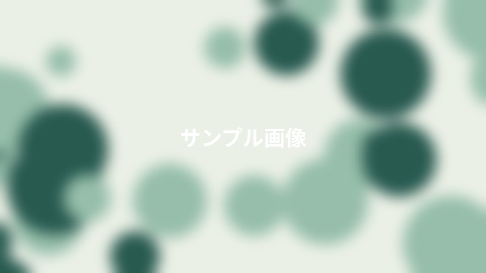

国内SaaS、価格改定の波
（ダミー）主要な業務SaaSで年内の値上げ発表が相次いだ。AI機能の標準搭載を理由に挙げる例が多く、利用部門では契約の見直しが始まっている。
AIカンパニー リサーチ新聞
社内手順書の自動化が先行、課題は評価の仕組み
（ダミー記事）国内の中小企業で、生成AIを日常業務に組み込む動きが広がっている。最初の入り口は議事録や手順書の整備で、効果が数字で見えやすい領域から定着が進んでいる。
（ダミー）調査対象のうち、半年以上継続して使っている企業では、文書作成にかかる時間が平均で3割ほど減ったという。一方で、出力の正しさを誰がどう確かめるかを決めていない企業ほど、途中で利用をやめる傾向があった。
（ダミー）専門家は「使い方の研修より、確認の担当と手順を先に決めるほうが定着しやすい」と話す。AIカンパニーでも、判断・監査系を別のモデルに任せる運用がこの考え方に近い。
（ダミー）今後は、社外とのやりとりにどこまで使うかが次の論点になりそうだ。
（ダミー）主要な業務SaaSで年内の値上げ発表が相次いだ。AI機能の標準搭載を理由に挙げる例が多く、利用部門では契約の見直しが始まっている。

（ダミー）家庭用のPCでも動く小型モデルの性能が上がり、機密データを外に出さずに要約や分類を行う事例が増えた。ラズパイでの常時運用を試す個人も出てきた。
（ダミー）広告やSNS投稿でAI生成画像を使う場合の表示方法について、業界団体が指針案を公表した。意見募集は来月末まで。

（ダミー）利用回数ではなく成果件数で課金する方式を発表した。導入企業の予算の立て方が変わりそうだ。
（ダミー）転職サイト各社の集計で、業務でAIを使える人材の求人が大きく増えた。未経験可の募集も目立つ。
（ダミー）過去の見積データを学習させ、下書きを自動で作る仕組みを導入した。確認は必ず社員が行う。
（ダミー）大学の研究チームが、長い文書の要点を取りこぼしにくくする手法を発表した。
（ダミー）外部の文書に紛れ込ませた指示でAIを操る手口について、専門機関が対策をまとめた。
（ダミー）関数の提案やグラフ作成の補助が無料プランでも使えるようになった。
（ダミー）来年度から、生成AIの仕組みと注意点を学ぶ単元が加わる。
（ダミー）出展は過去最多の見込み。
（ダミー）有料プランを使う個人の支出額は月1,000〜2,000円が最も多かった。
（ダミー）創刊号です。文字だけの報告より、見出しの大小で重要度が一目でわかる形を目指しました。読みにくい所があれば受付箱へ。